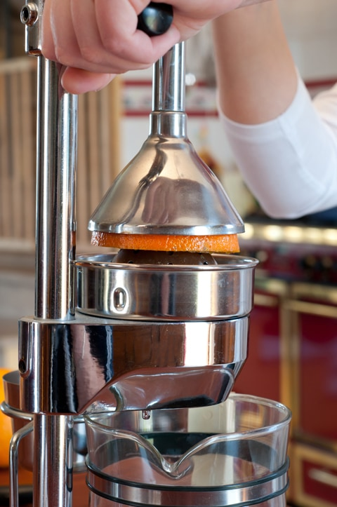
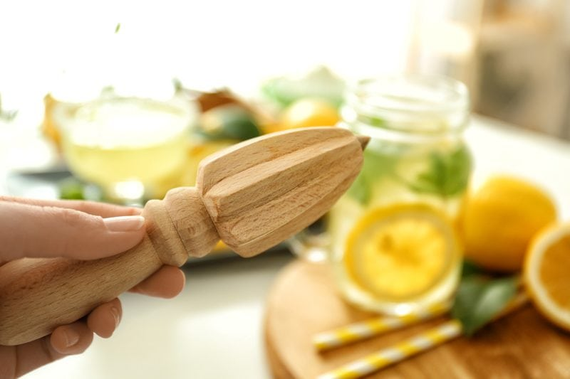
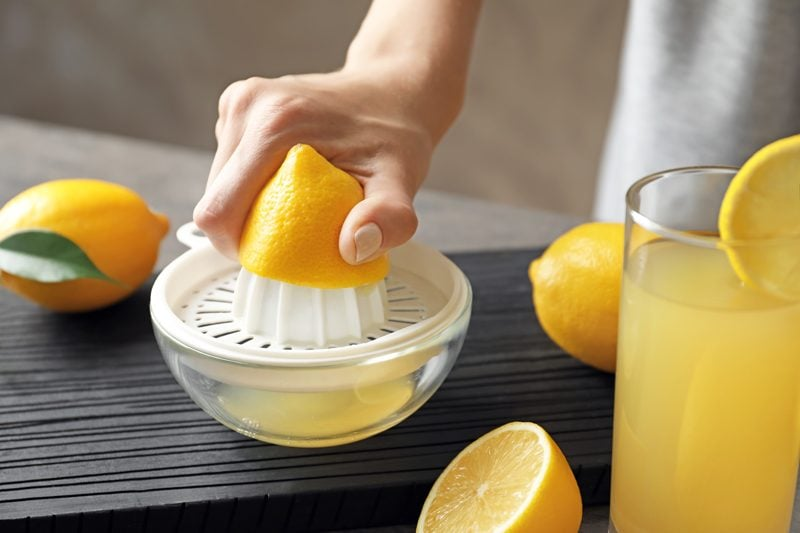
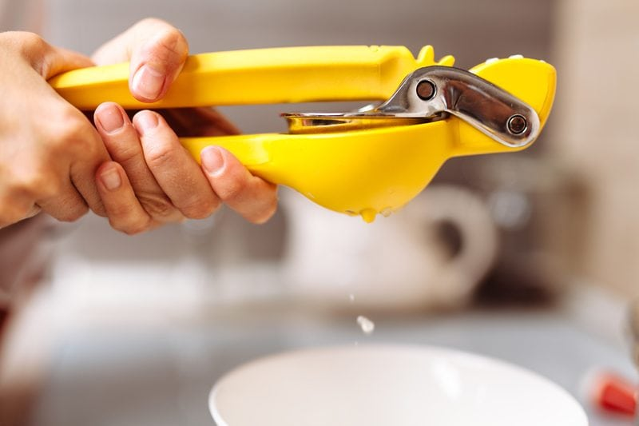
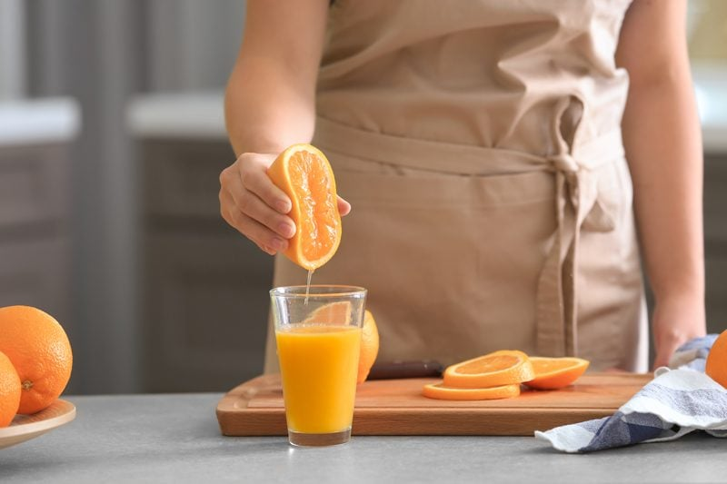

Juicers for Citrus / Pomegranates
Ready for a refreshing cold glass of orange juice?
Citrus juicers come in all shapes, sizes, and price ranges. Today, I am going to cover the basic juicers that I have used throughout the years. I will discuss the perks, drawbacks, and how to use each one. So pour yourself a glass of juice and let’s get busy learning what tool will work best for your needs and kitchen.
Whether you enjoy making the occasional batch of OJ at home or you need a particular measurement of lemon juice, citrus juicers are an excellent tool to have to in your kitchen “toolbox.” I have owned mine since 2009, and it is still holding strong.
I bet some of you may be wondering, can’t I use my masticating juicer? Yes, you can, but I have found that when I run peeled citrus through my electric juicer that it tastes a tad more bitter. That’s because a lot of the pith is also running through the machine which gives it that bitter dry taste and feeling in your mouth. When I use an actual citrus press, the juice is sweeter and smoother.
Over the years I have juiced a LOT of citrus fruits. There is nothing quite as refreshing as fresh squeezed orange or grapefruit juice. Both Bob and I have gone through phases where it was our morning wake up call or afternoon gitty-up-and-go drink.
Time-Saving Tip
With all my recipe making I tend to use lemon juice regularly. Typically, I purchase a large bag of lemons, wash them, roll them around to get their juices loosened up, cut them in half, and go to town with juicing. I will end up with a quart of juice by the time I am done. From there I pour a 1/4 cup of juice into freezer-safe jars and freeze them until needed.
Juicers range from simple tools to elaborate machines.

High Capacity Citrus Press
With their pull-down levers, these are much easier on your arms for volume juicing. They are also easier to clean than an electric juicer. When juicing lemons or limes, I press each half of the fruit, and then I pile the two pressed halves stacked on top of each other and give that one quick press. I usually get some extra juice this way.
Perks
- These produce juice at a much higher volume with less work.
- They create a smoother tasting juice.
- They are cheaper compared to all the other electric-operated juicers.
- Since they do not require electricity, they are silent when in operation. Unless you are grunting and groaning a lot. (teasing)
- Since there is no high-speed spinning involved there is no oxidation, thus preserving the enzymes and nutrients of the juices.
- Can juice grapefruit, oranges, tangerines, lemons, limes, and pomegranates.
Drawbacks
- They’re also quite large in height so they can be tricky to store or keep on the counter. It depends on your kitchen design.
- They are more expensive than other options if your budget is tight.
How to Use
- Start with room temperature fruit to get a better yield of juice.
- It is best to roll the citrus fruit on a solid countertop before juicing. It breaks the membranes around the capsules in the fruit’s flesh that holds all of the juice, giving you a better yield.
- Wash and cut your citrus fruit in half across the middle and not from the stem-end to the other end. When slicing this way, the fruit’s center fits nicely on the tip of the cone of the citrus juicer.
- Place the juicer directly in front of you to provide substantial leverage when lowering the pressing arm.
- Slide a glass or plastic measuring cup between the U-shape feet so it can catch all the juice. I like to use my 4-cup glass measuring cup that has a pouring spout.
- Pull the arm press down nice and firm.
Juicing Pomegranates
It wasn’t until some years later that I made a discovery with this kitchen tool and that was the fact that I could juice pomegranates with great ease and success. Cut them in half and press them like you would with an orange or grapefruit. Brillant! I will warn you though, ANYTIME you deal with pomegranates, always protect your surroundings and clothing. It’s inevitable to have some little sprays of juice shooting here and there.

Wooden Citrus Reamer
This piece is a classic kitchen tool. I remember seeing them growing up in my grandmother’s kitchen drawer, and I thought it was one of those tabletop spinner toys. A handheld twist reamer is ideal for quickly juicing a single lemon or lime. You can hold your fruit at any level and angle you like, unlike my old juicer, which required me to grind the fruit on top of it parallel to the counter, which was quite uncomfortable.
Perks
- Can juice grapefruits, oranges, tangerines, lemons, and limes.
- Quick and easy for a single-use need.
- Easy to store in the kitchen drawer.
Drawbacks
- With a reamer you tend to get a lot of pulp and seeds, so you might want to strain the juice before using.
- Digs into the pith which can create a more bitter tasting juice.
- Little messier to use. Juice inevitably runs down your wrist, and the fruit quickly gets slippery and hard to grip.
- It is limited to small juicing needs.
How to Use
- Start with room temperature fruit to get a better yield of juice.
- It is best to roll the citrus fruit on a solid countertop before juicing. It breaks the membranes around the capsules in the fruit’s flesh that holds all of the juice, giving you a better yield.
- Wash and cut your citrus fruit in half across the middle and not from the stem-end to the other end. When slicing this way, the fruit’s center fits nicely on the tip of the cone of the citrus juicer.
- Jam the pointy end of reamer into the middle of the fruit.
- Twist the reamer and fruit against each other while squeezing the fruit.

Manual Citrus Juicer
Perks
- Can juice grapefruits, oranges, tangerines, lemons, and limes.
- Disassembles for easy cleaning.
- Doesn’t require electricity.
- Doesn’t take up to much room when being stored.
Drawbacks
- Requires some hand and arm strength.
- Can be tiring if you plan to juice a large quantity.
How to Use
- Start with room temperature fruit to get a better yield of juice.
- It is best to roll the citrus fruit on a solid countertop before juicing. It breaks the membranes around the capsules in the fruit’s flesh that holds all of the juice, giving you a better yield.
- Wash and cut your citrus fruit in half across the middle and not from the stem-end to the other end. When slicing this way, the fruit’s center fits nicely on the tip of the cone of the citrus juicer.
Electric Citrus Juicer
The electric juicers usually have a conical dome which spins, so when you exert pressure, the dome rotates into the pulp of the fruit. Most domes have protruding blades to make this more efficient.
Perk
- Can juice grapefruits, oranges, tangerines, lemons, and limes.
- These give you the highest volume with the least amount of muscle.
- If you suffer from hand strength, this could be a good fit for you.
Drawbacks
- You need access to electricity.
- They can be a bit expensive. The price range is based on the quality of the unit.
- They have multiple parts so cleaning them is a bit of a chore.
- They can create a bitter juice if not careful. You don’t want to press so hard that the unit is digging into the peeling.
How to Use
- Start with room temperature fruit to get a better yield of juice.
- It is best to roll the citrus fruit on a solid countertop before juicing. It breaks the membranes around the capsules in the fruit’s flesh that holds all of the juice, giving you a better yield.
- Wash and cut your citrus fruit in half across the middle and not from the stem-end to the other end. When slicing this way, the fruit’s center fits nicely on the tip of the cone of the citrus juicer.
- Press the cut side of the citrus onto the spinning knob in the center to extract the juice, which then flows out the spout.

Swing-Top Hand Held Squeeze Juicer
A handheld squeezer is great for lemons or limes. It requires no technique and no instructions. Slice a lemon in half and press it between the two metal pieces until it is thoroughly juiced. When I juice limes, I will squeeze each half of the lime, and then I will stack them on top of each other and press them one last time to get an extra squirt or two of juice. It seems that the extra bulk helps to add pressure to the halves.
Perks
- Can juice small tangerines, lemons, and limes.
- They’re affordable.
- They’re easy to use and easy to clean.
- Easy to store in the kitchen drawer.
- They extract more citrus oil from the peels, for more fragrant juice.
Drawback
- If you have cracked and dry skin, the juice of a lemon will find it and let you know right quick.
- You won’t be able to juice oranges, grapefruits, or pomegranates with this type of juicer.
- Hand strength is required.
- They also have a propensity to create errant sprays of juice, here and there, which can be irritating, so juice slowly.
- This tool usually keeps the seeds within the unit when squeezing the juice out. With that being said, it is best NOT to squeeze the juice directly into the other ingredients that you are mixing, just in case a seed goes overboard, and you have to dig it out.
How to Use
- Start with room temperature fruit to get a better yield of juice.
- It is best to roll the citrus fruit on a solid countertop before juicing. It breaks the membranes around the capsules in the fruit’s flesh that holds all of the juice, giving you a better yield.
- Wash and cut your citrus fruit in half across the middle and not from the stem-end to the other end. When slicing this way, the fruit’s center fits nicely on the tip of the cone of the citrus juicer.
Hey Amie Sue, I don’t own any of these contraptions, what do I do?
When in doubt, hand-squeeze it out! haha

Let’s Go Shopping
High Capacity Citrus Press
- Hamilton Beach 932 Commercial Citrus Juicer, Black
- Stainless steel strainer cone designed for juicing lemons, limes, oranges, grapefruits, and pomegranates.
- No electricity required.
- Exerts up to 2,000 pounds of pressure for maximum juice extraction.
- Removable strainer cone; swing-out drip cup for small citrus fruits; non-skid base.
Citrus Reamer
- Fox Run 4165 Lemon Reamer/Juicer, Wood
- Constructed of beechwood for durability.
- Great for quick juicing of lemons, limes, and oranges.
- The handle provides a comfortable grip; takes up minimal storage space.
- Simple design and easy to use; hand wash only.
Manual Juicer
Electric Juicer
- BLACK+DECKER CJ630 32-Ounce Electric Citrus Juicer, White
- A 20-watt electric citrus juicer with 32-ounce capacity.
- Auto reversing reamer and stirrer for maximum juice extraction.
- Standard-size cone; strainer with adjustable pulp control.
- Drip-free pour spout; cord wrap and dust cover for storage.
Swing-Top Hand-Held Squeeze Juicer
Nouveauraw.com is a participant in the Amazon Services LLC Associates Program, an affiliate advertising program designed to provide a means for us to earn fees by linking to
Amazon.com and affiliated sites – at no extra cost to you.
Thank you for your support! amie sue
© AmieSue.com